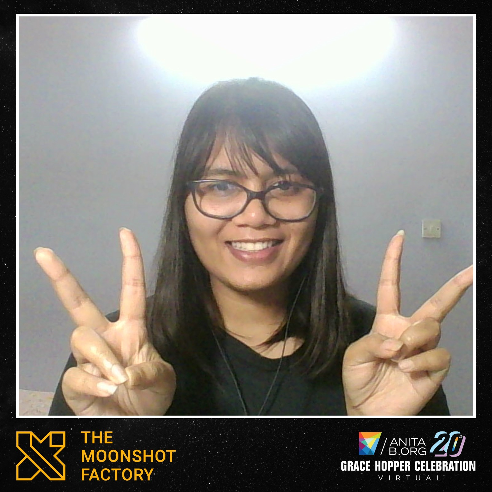
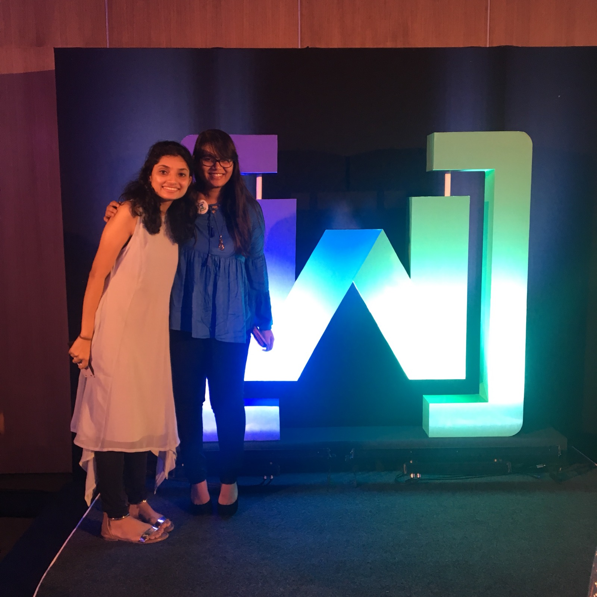

Community Engagement
Diversity | Equity | Inclusion
AnitaB.org GHC 2020 Student Scholar
The Grace Hopper Celebration, organized by AnitaB.org, is the largest gathering of women technologists in the world. Each year, AnitaB.org provides scholarships to students showing merit and dedication to improving diversity in technology. The scholarship enables many young women, like me, to attend GHC, connect with inspiring leaders, learn from erudite researchers and land amazing jobs.
Podcast: Getting Started with Tech Research

Many undergrad students don't realize the importance and scope of research in technology. The ones that do realize, often have little support or guidance to get started. I created this podcast with the aim of educating undergraduate students, especially girls about research and its associated careers. I host conversations witj women Ph.D. students who speak of their experiences and advice beginners in the field. Tune in now!
Women Techmakers and ACM-W
As a member of the Women Techmakers and ACM-W chapters at VIT University, I have collaborated on technical projects and organised many workshops, seminars and competitions to foster women participation in developer communities. I was also invited to participate in Google's Women's Day Celebrations and Google Developer Days 2017 in Bangalore. Learn more here